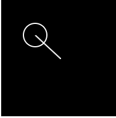
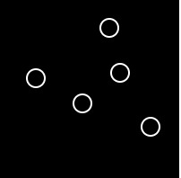
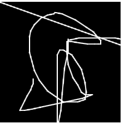

Draw a line centered at (50, 50) which follows the mouse. As an extra try to also create a circle that moves with the mouse.
Expected Output:
Draw a circle at the current mouse location whenever the mouse has been pressed. Also refresh the screen whenever a key is pressed.
Expected Output:
Using the previous and current points of the mouse, draw a line that moves along with the mouse.
Expected Output:
